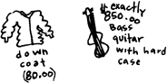
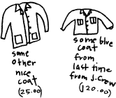
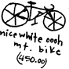
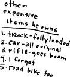

In his sisters kitchen
He cooked me dinner at 3 a.m.
I had just cut his hair
And he was really happy
It was so easy to make him happy
He showed me his car
And some of his coats
From his coat collection
And I listened to his
Favorite wipers album
But then he played that Pavement album
with range life and because your empty
and im empty and it made my throat hurt
for a second
In his sisters living room
While he cooked I read
It was Raymond Carver poems
Which should be made illegal
For me to read, anyway
When I'm supposed to be
Thinking about all his stuff
I guess
But it was a good dinner
It made him proud
And we made a giant silver star
On the floor out of pie tins
Because it was dumb and funny
And then he said stay with me
And really It isnt his fault
About Pavement
Or Raymond carver
Or how much pepper I like to put on things
He couldn't know
But I knew
And I said
Oh my god,
No way
